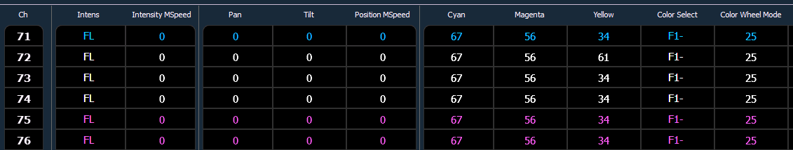

Using By Type Presets
Storing a By Type Preset
If {By Type} is used when recording, the lowest number channel of each fixture type will be the default channel. Generally, when storing by type presets, you will want only one channel of each fixture type in use. Any additional channels in that fixture type will be recorded with discrete data.
- [1] [Thru] [6] [Record] [Preset] [1] {By Type} [Enter] - Channels 1 through 6 are saved to Preset 1. Channels 1 through 6 are of the same fixture type. Channel 1 will be the default channel, and channels 2 through 6 will be saved with discrete data.
- [1] [Thru] [6] [Record] [Preset] [1] [Enter] - If a by type preset is rerecorded without using the {By Type} softkey and the default channel is included in the record, the default channel's level will change and all other changes will be discrete.
- [1] [Thru] [5] [Record] {Preset 1} {Discrete} [Enter] - If a default channel is included in a record where {Discrete} is used and another channel is tracking it, the default channel will be changed to having discrete data and the lowest numbered tracking channel will become the new default channel. All other channels in the record will also have discrete data.
Editing By Type Presets in Blind
In Blind, the default channel’s levels will display in blue, discrete data for the other channels will display in white, and any channels that are using the default channel value will display in magenta.

Softkeys available for editing presets in blind are {By Type}, {Discrete}, and {Cleanup}.
- [3] {By Type} [Enter] - makes channel 3 the new default channel for that device type. If another channel for that type was the default channel, its data will now be discrete.
- [1] [0] [Thru] [2] [0] {Discrete} [Enter] - changes the levels for channels 10 through 20 to discrete. If any of those channels are default, the lowest numbered tracking channel will become the new default channel.
- [5] [Thru] [8] [At] [Enter] - removes the discrete data for channels 5 through 8. They will now use the default channel’s values.
- [Preset] [2] {Discrete} [Enter] - changes all tracking and default channels to discrete.
- [Preset] [5] {By Type} [Enter] - makes the first channel of each device type a default channel.
- [Preset] [3] {Cleanup} [Enter] - converts presets created in earlier versions of Eos Family software to by type presets. This command will use the first channel of each type as the default, and allow other channels of the same type to use that value upon recall.
{Make Null} can be used with by type preset when you wish to withhold a channel from responding to a by type preset recall. The data will still display but will be in gray with a “N”.